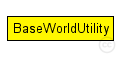
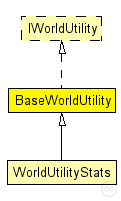

This documentation is released under the Creative Commons license
This documentation is released under the Creative Commons licenseBasic utility module for the whole network. Provides utility methods and information used by the whole network.
The following diagram shows usage relationships between types. Unresolved types are missing from the diagram. Click here to see the full picture.
The following diagram shows inheritance relationships for this type. Unresolved types are missing from the diagram. Click here to see the full picture.
| Name | Type | Description |
|---|---|---|
| WorldUtilityStats | simple module |
Tracks simulation wide traffic statistics |
| Name | Type | Default value | Description |
|---|---|---|---|
| playgroundSizeX | double |
x size of the area the nodes are in (in meters) |
|
| playgroundSizeY | double |
y size of the area the nodes are in (in meters) |
|
| playgroundSizeZ | double |
z size of the area the nodes are in (in meters) |
|
| useTorus | bool | false |
use the playground as torus? |
| Name | Value | Description |
|---|---|---|
| class | BaseWorldUtility | |
| display | i=misc/globe |
// Basic utility module for the whole network. // Provides utility methods and information used by // the whole network. simple BaseWorldUtility like IWorldUtility { parameters: @class(BaseWorldUtility); double playgroundSizeX @unit(m); // x size of the area the nodes are in (in meters) double playgroundSizeY @unit(m); // y size of the area the nodes are in (in meters) double playgroundSizeZ @unit(m); // z size of the area the nodes are in (in meters) bool useTorus = default(false); // use the playground as torus? @display("i=misc/globe"); }
This documentation is released under the Creative Commons license